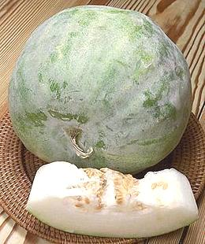

Ash Gourd

[Winter Melon, White Pumpkin, Wax Gourd, Safed Petha (Hindi), Dong Gua
(China), Mak ton (Laos); Fuk (Thai); Benincasa hispida]
These large gourds are popular in China as Winter Melon and are actually the
mature phase of the Fuzzy Melon. They are valued both for their delicacy
when cooked and because, with their waxy coating, they can be kept well into
the winter. Carefully handled they can last for 12 months. They are also
popular in Southeast Asia and in India (as Ash Gourd) where they are used
for both sweets and curries. Immature melons are sold as
Fuzzy Melon.
The first photo specimen is a spherical variety about 10 inches in diameter.
These are favored by markets in Southern California because they're small
enough to sell whole and can be easily cut into wedges for sale. The second
photo (below) shows very small examples of a sausage shaped variety.
Sausage shaped melons can easily top a yard long and 50 pounds, but the
photo specimen was just 15 inches long, 4-1/2 inches diameter and weighed
4 pounds.
More on Gourds.

Buying:
Ash gourd can be found in markets serving
Southeast Asian, Chinese and Indian communities. Because of their large
size they are usually cut into wedges or slices and wrapped in plastic
film, but smaller ones are often sold whole. In Southern California the
spherical varieties are most common sold whole, as they are smaller
than the elongated ones.
>Storage:
Whole gourds, if in good condition with the
waxy coating intact, can just be left sitting on the kitchen floor for
a month or more. They will keep longer in a cooler place. Once cut they
will keep refrigerated for less than a week.
Prep:
Just peel off the green rind with your regular
vegetable peeler, it is very thin.
Yield:
A small gourd, weighing 4 pounds 5 ounces,
yielded 3 pounds 5 ounces peeled and seeded (72%), so for 1 pound you
need to buy about 1 pound 6 ounces. Clovegarden recipes give weight
for unpeeled unseeded.
Cooking:
Ash Gourd is very tender and delicate but, as
with other gourds, chunks hold their shape well compared to squash. Most
recipes call for simmering for about 15 minutes.
gd_ashz 070913 - www.clovegarden.com
©Andrew Grygus - agryg@clovegaden.com - Photos on this
page not otherwise credited are © cg1 -
Linking to and non-commercial use of this page permitted